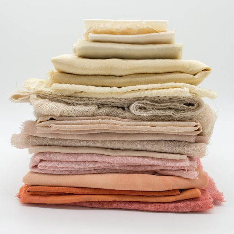
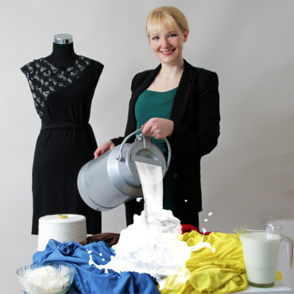
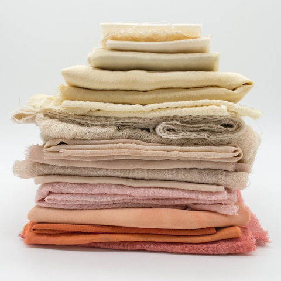
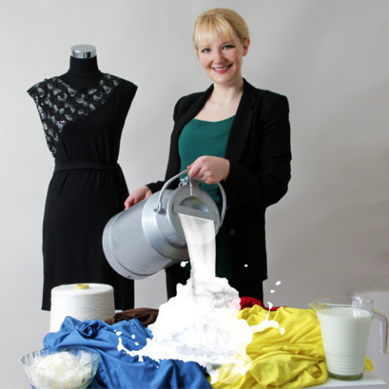
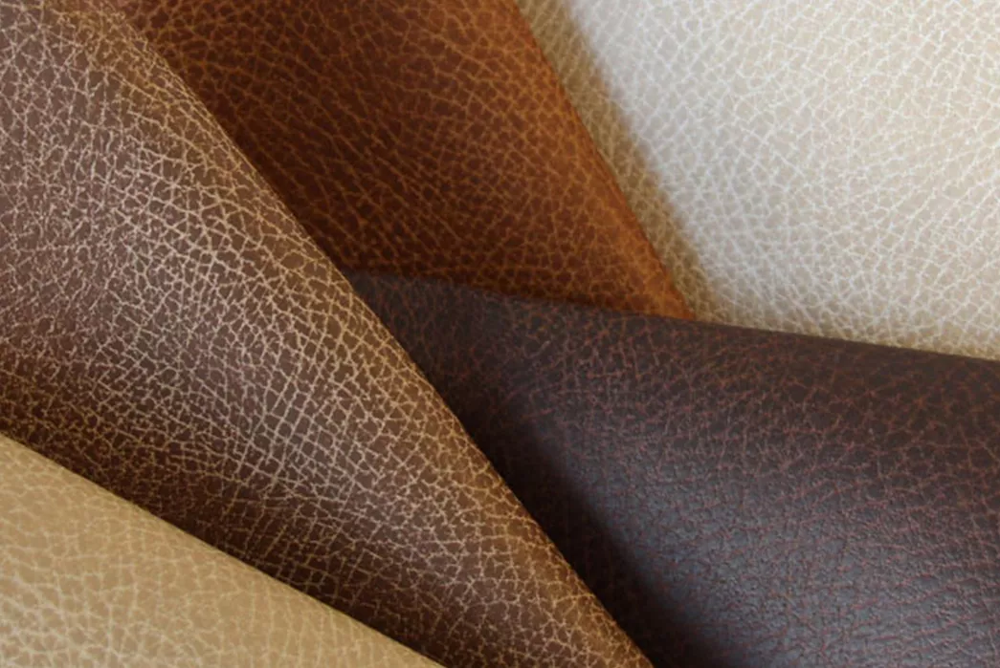
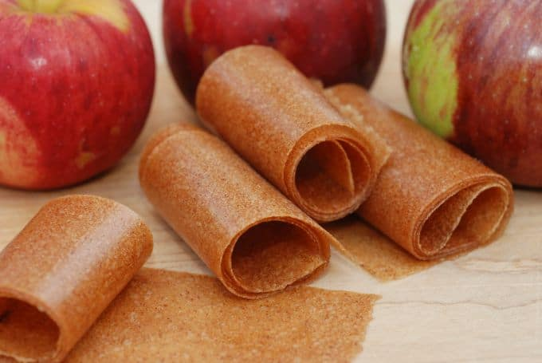
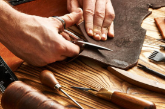
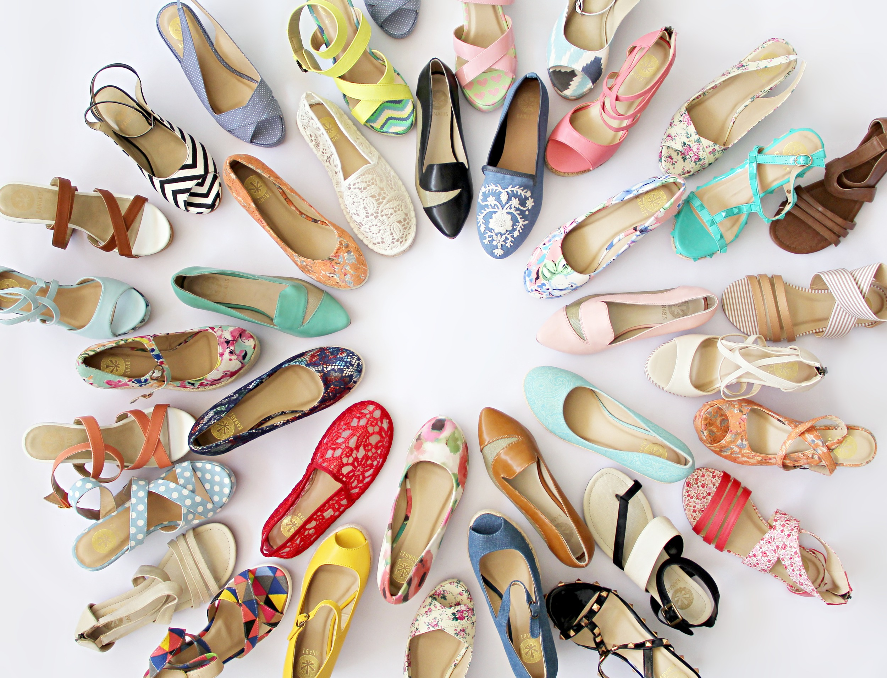
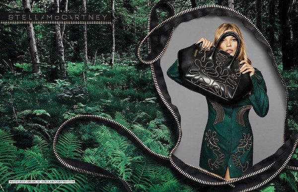

|


|
"With marvelous substitutes for leather, fur, silk, wool readily available,
it’s time for vegans to be the new trendsetters."
|  | The products that are lavishly displayed in high end stores have undergone a lot, perhaps the animals that are showcased in these luxurious brands have literally surrendered their lives and most have become endangered if not extinct. : Innovative vegan options -Including pineapple leaf, fleece made from recycled plastic bottles, soy-based “vegetable cashmere” and wool made from seaweed and hemp and may more are already available. Sustainable style is here, and it doesn’t come from animals. |

|
Nature’s most nutritious snacks-apples, can now be used for things more than just keeping your mind sharp. Newer inventions reveal that they can be used as one of the most sustainable and innovative forms of leather- “Apple leather”. Winner of Eluxe Best Vegan Brand 2019, Nuuwai, makes sophisticated bags out of the skin of an apple. To make their apple leather, named “Apple skin”, Nuuwaï takes the fruit waste from the apple industry (mainly, from apple juice production), dehydrates and grounds it into a very fine apple powder. The powder is then mixed with 50% PU (polyurethane) and applied to a tear-resistant roll with cotton fabric. These rolls are then heated to produce a weather resistant, durable fabric, which is then embossed to create different surface structures |  |
|---|
|  |
MuSkin is a natural material made form Mushrooms. Extracted from mushroom caps, the tanning process of this leather is natural and non-toxic, unlike that of animal derived leather, which makes MuSkin more suited to items that are in direct contact with the skin. Watch straps, shoes insoles, and bags are much softer, more water repellent and breathable than animal leather. Tests reveal that this leather stops any bacterial proliferation and offers a great substitute to the present sources of leather. BOSS Menswear now offers high-quality vegan shoes made of pineapple leather. The material, known as Piñatex, is “an innovative leather-alternative created from pineapple leaf fibres”.Because the leaves are a byproduct of harvesting the fruit, no extra resources are needed to produce the material, which means that farmers receive a supplementary source of income.
|
|
|---|---|---|
| The high cost of cheap clothes on the environment is leading to the origin of newer theories like ethical fashion and sustainable style. But unless those pairs of boots are cruelty free, applying those terms is just greenwashing! Another Peta certified Kanabis is a non-leather, cruelty-free vegan Indian footwear brand that offers fashionable and affordable high quality shoes. The co-founder Devika Srimal says “It doesn’t take leather to put your best foot forward”. Marrying prodigious design with a cruelty-free methodology has facilitated the brand to stretch out to customers who strive for merchandises that don’t consciously neglect the environs. All their materials have been handpicked to generate a careful combination of fabrics for the apt look and ease and their shoes have been tested and certified for slip resistance, abrasion-resistance and flexibility. The large number of successful vegan brands are a vivid example of the fact that you don’t have to be cruel to animals to make it big in the fashion industry. |  | |
|---|---|---|
| As a vegetarian brand, Stella McCartney believe in treating animals and their habitats with respect. They indorse a cruelty free philosophy and continue to originate ways of generating ecological constituents. They produce luxurious products that are the right fit for today and likewise ensure a beautiful future. The brand is committed to redefining what the future of fashion looks like. From never using leather or fur and pioneering new alternative materials to utilizing cutting edge technologies, to pushing towards circularity and protecting ancient systems, this brand has done it all. |  | Animal products are usually heavily valued because of their stark availability to the masses. Those who can afford it, are ready to pay the expense without realizing that in actuality it’s the environment paying the larger amount! It’s a rationale that true quality isn’t about easy access to mass or industrially-produced goods- it’s about the facility to employ skilled laborers and craftsmen and having easy access to traditional or exotic materials |
"Fur and leather are things that denote a status symbol and people with power want to keep access to power exclusive. Similarly, a vegan lifestyle is expensive too. But once the fruits start to bear, they surpass the expenses."